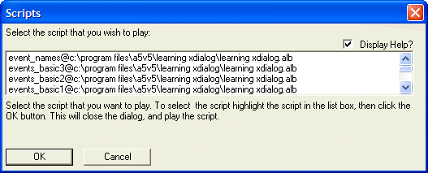
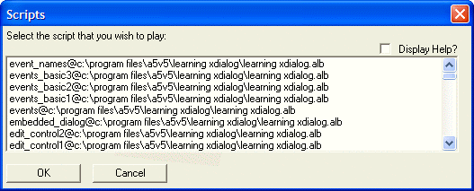

Conditionally Sizing Controls
Sometimes it is desirable to be able to resize controls on the fly.
For example, you may want to decrease the size of a list box to allow room underneath the list box to display help. You could give the user the ability to turn off the help, which would then display more rows in the list box.
To define a conditional size for a control, two sets of sizes for the control are specified, separated by a ';'. The sizeindex internal variable controls which size is used. A sizeindex value of 0 will select the default size (the first one), and a value of 1 will select the alternate size.
Turn off the sizeindex with the {sizeindex=} command.
dim scripts[100] as C dim help_text as C help_text = help_text + "Select the script that you want to play. To select" help_text = help_text + " the script highlight the script in the list" help_text = help_text + " box, then click the OK button. " help_text = help_text + "This will close the dialog, and play the" help_text = help_text + " script." scripts.initialize(a5.Script_Enum()) showhelp = .T. result = ui_dlg_box("Scripts",<<%dlg% {region} Select the script that you wish to play:; {justify=top,right}(showhelp) Display Help?; {justify=top,left} {sizeindex=if(showhelp,0,1)} [.100,4;100,8:script^#scripts] ; {sizeindex=} {condition=showhelp} ; {text=100,4:help_text}; {condition=.t.} {endregion}; <*15&OK> <15Cancel> %dlg% ) if result = "&OK" then script_play(script) end if |
This script produces this dialog when the Display Help check box is checked:

Lesson 4: Conditional Size
And it produces this dialog when the Display Help check box is cleared:

Lesson 4: Conditionally Sizing a Control
The script uses the a5.script_enum() method to initialize an array containing script names. If the user clicks the OK button, the selected script is executed.
 Note : Another way in which you could also achieve that same effect would be to use a {conditional} command. For example:
Note : Another way in which you could also achieve that same effect would be to use a {conditional} command. For example:
{condition=showhelp} ; {region} [.100,4:script^#scripts]; {text=100,4:help_text}; {endregion} {condition=.not.showhelp} {start_pos} {region} [.100,8:script^#scripts]; {endregion}; {condition=.t.} |
Next
Supported By
Alpha Five Version 5 and Above
Limitations
Desktop applications only.